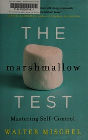

《棉花糖实验》
书·Walter Mischel, 2014·The Marshmallow Test: Mastering Self-Control

作者自述延迟满足研究与“如果…那么…”人格观，后续重复研究显示早期结果被高估。
- 作者
- Walter Mischel
- 年份
- 2014
- 难度
- 入门
- 类型
- 实践
- 所属学派
- 人—情境之争
- 核心理论
- 认知—情感人格系统
版本
- 中文版 《棉花糖实验》 [美] 沃尔特·米歇尔（Walter Mischel） · 任俊 / 闫欢 译 · 北京联合出版公司 · 2016 豆瓣 7.8 分（442 人评价） 豆瓣页面 ↗
- 英文版 The Marshmallow Test: Mastering Self-Control Walter Mischel · Little, Brown, first edition · 2014 Open Library ↗